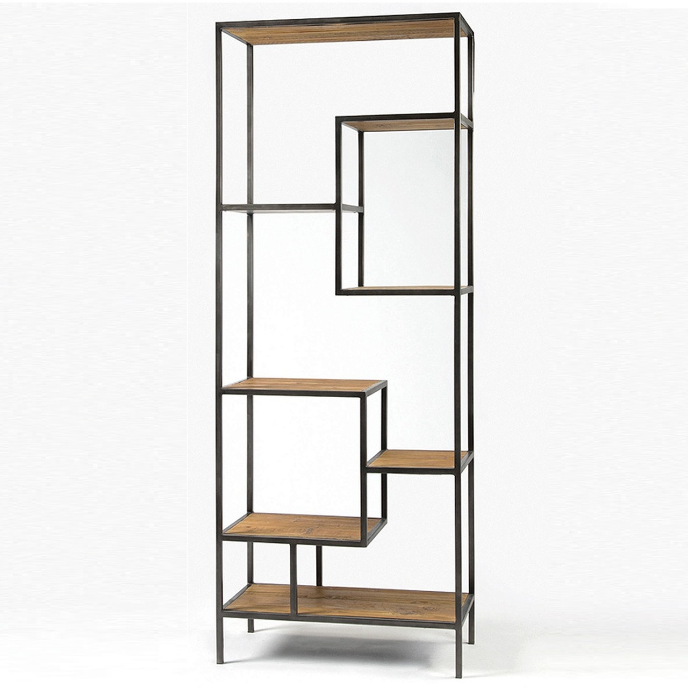
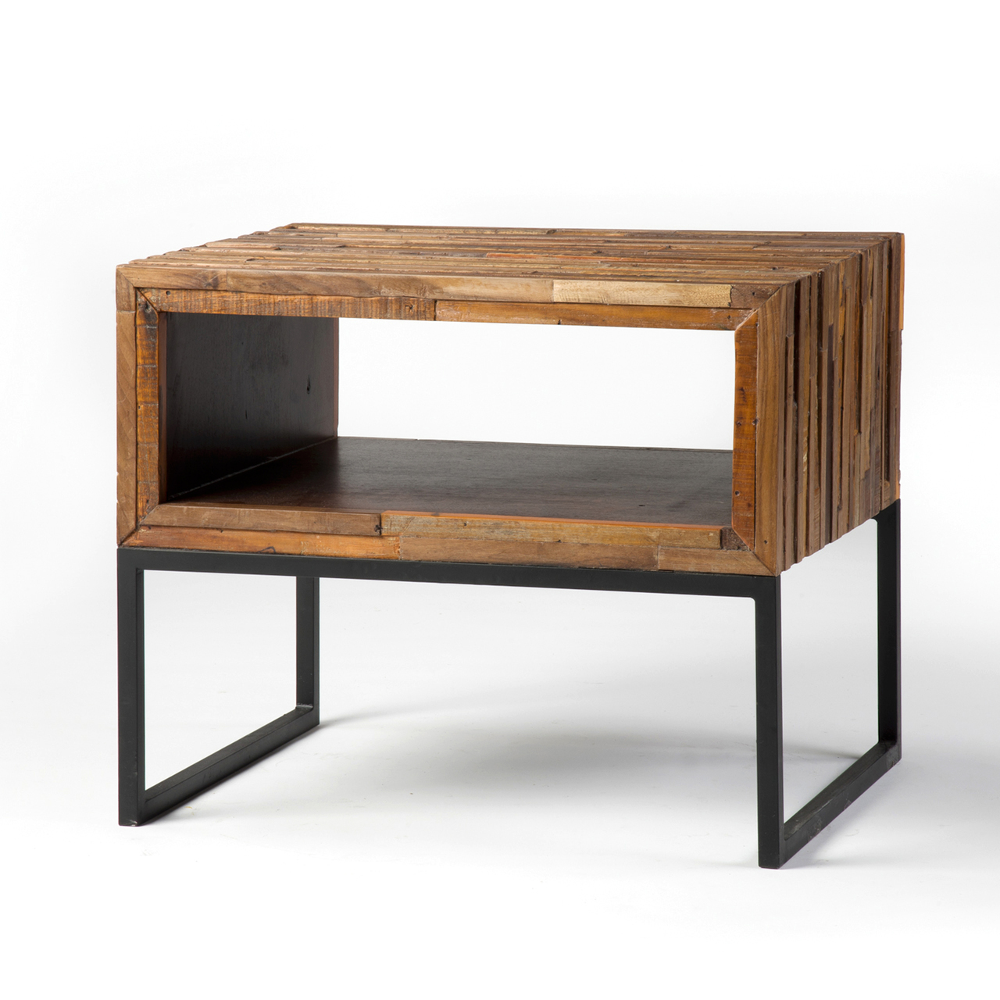
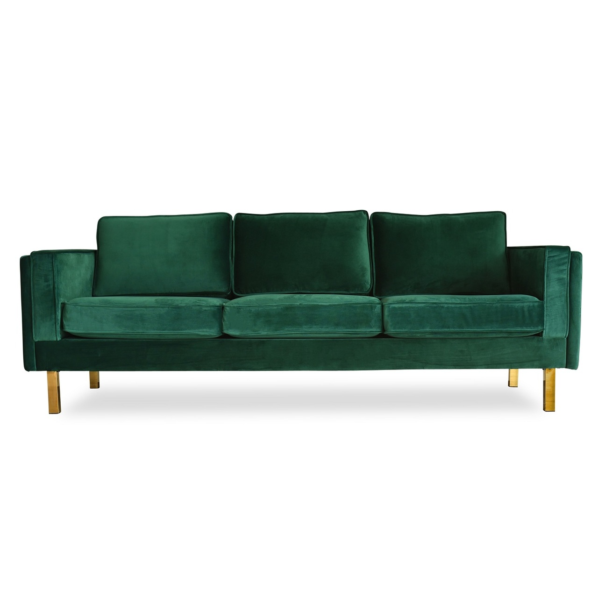
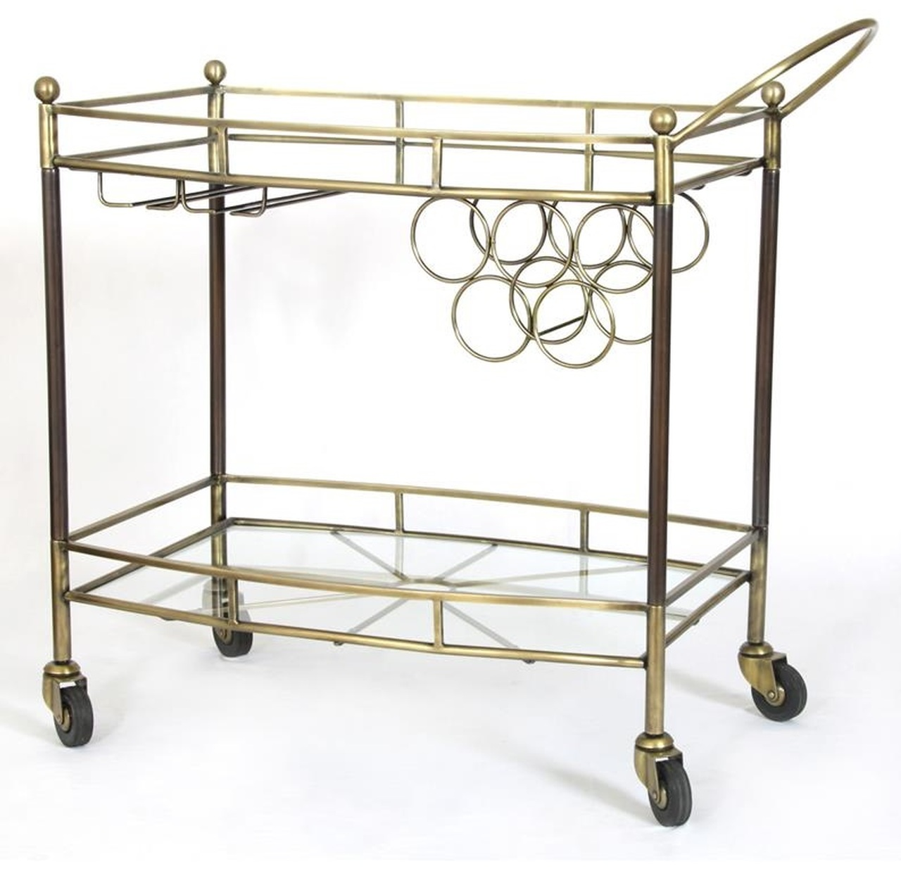
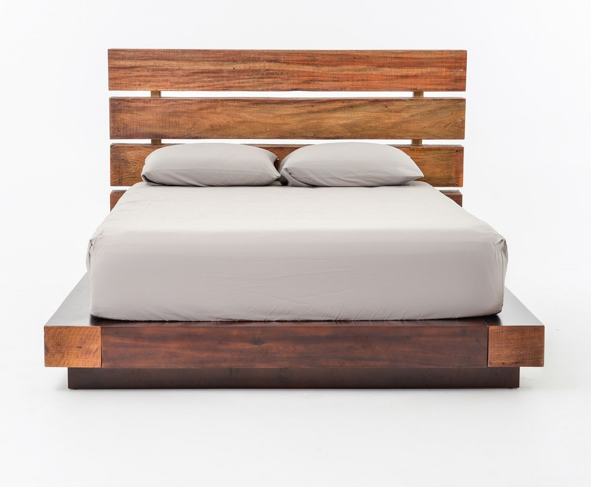

ZEN HOME
- FILTER BY:
-

Zola Mid-Century Modern Grey Linen Sofa 86"
$1,099.00
Make a bold statement in your living room with The Zola Sofa’s unique, curvaceous stance. Melt into the plush tufted detailing of this handcrafted mid-century modern inspired sofa. Coziness will surround you in the Zola – premium foam padded seat, back and armrests create a perfect haven to lounge and relax. Gorgeous linen blend upholstery that’s durable and easy-to-clean makes the Zola perfect for everyday use. Hardwood crossbeam legs support the seat and add even more pizazz to this designer piece.
-
Morpho Swivel Velvet Arm Chair
$269.99
The Morpho Swivel Velvet Armchair with Metal Base from Opalhouse™ makes the perfect addition to your mod-inspired living room, den or master suite. This fabric-upholstered accent chair features a round, tub-style design for a distinctly mid-century feel, and it comes in a rich jewel tone that adds a sense of dimension to your space. A gold-tone metal pedestal base adds a little shine and contrasts beautifully with the texture of the velvet upholstery, while the swivel design makes it easy to adjust the direction of the seat.
-
 Geometric Reclaimed Wood and Iron Bookcase 84"
$1,150.00
FA sophisticated geometric staggered design bookshelf. Our Geometric Reclaimed Wood + Iron Bookcase provide smart and stylish organization for any room. Crafted from iron and recycled pine wood with Antique Bleach Seal finish.
-
22x22 Stripe Tassel Pillow
$24.99
Bring an elegant flair to your interior space while adding a functional piece to your home decor with this Stripe Tassel Pillow from Hearth & Hand™ with Magnolia. This decorative square pillow features a blue-striped pattern against a sour cream white backdrop that brings dimension and style to your space, and it's side-tassel detailing lends additional flair to any style of decor. The soft cotton exterior keeps things cool and comfy, while the generously filled design provides you and your guests with comfortable support.
-
Glass Pineapple Table Lamp Brass
$33.74
For a unique table lamp to go with your eclectic sense of style, look no further than the Glass Pineapple Table Lamp from Opalhouse™. With the textured glass design, gold pineapple leaves and lampshade on top, this lamp will give off a warm, ambient glow wherever you decide to place it. Set it on your entryway side table and mix it in with your favorite photos and decorative pieces to create a cool, funky vignette to welcome guests into your home.
-
 Vince Mixed Reclaimed Wood End Table
$999.00
Bring a natural-looking theme to your interior with this Artificial Succulent in Ceramic Pot from Threshold™. This faux plant arrangement decorated with a green succulent makes a welcoming addition to any table decor. Set in a white ceramic planter for a neat modern touch, this plant accent can simply be placed on any tabletop for instant display. The artificial construction requires no maintenance, and stays fresh and beautiful at all times.
-
Barrios Transitional Coffee Table Distressed
$249.29
Furnish your living space with the ioHOMES Barrios Transitional Coffee Table. With its charming design it can surely match any living room! The coffee table's white color, wood accented drawer and feet, open shelving design, and low profile makes this the perfect accent piece that is stylish and functional. With a variety of storage options, you can rely on this table to hold and store casual items. Add the ioHOMES Barrios Transitional Coffee Table as a useful accent furniture piece!
-
 Lexington Mid-Century Modern Emerald Green Velvet Sofa
$1,439.00
Polished gold legs are paired perfectly with plush green velvet in this handcrafted gem to instantly infuse chic mid-century modern glamour into your parlor. The Lexington Sofa is upholstered in irresistibly soft velvet that will make it near impossible to keep from cuddling up against all day. This sofa is built to last and be enjoyed by your family for many years: kiln dried hardwood frame crafted by hand and stainless-steel legs.
-
Glacier Hourglass Woven Area Rug
$149.99
Liven up your living space with this stunning Glacier Hourglass Rug from Project 62™. Geometrical patterns stand out in vivid contrast against a solid backdrop drawing instant attention to the beauty of the rectangular rug dressing up your floors. The modern-inspired design adds chic style to your space while shielding your floors from scuffs and stains. You’ll love sinking your feet into the cozy, medium pile of this woven rug. The neutral pattern allows easy pairing with any decor you have in mind.
-
 Coles Antique Brass and Glass Bar Cart
$790.00
Entertaining continues to be a fun, welcome trend this year and an antiqued brass bar cart is a refreshing addition to any party. A classic piece made new by a daring finish, it will have guests quick to gather around and not only because it carries the liquor. Beautifully antiqued brass with touches of Stainless and glass call to mind art deco and old Hollywood glamour. These bar carts mix as effortlessly as a cocktail, accenting spaces from the soft and feminine to the starkly modern.
-
 Iggy King Platform Bed Frame
$3,200.00
Our eclectic Iggy King Platform Bed frame is handcrafted from exotic demolition hardwoods such as salvaged wood from downed telephone poles and from 100-year-old flooring as well as Brazilian peroba and Chilean Guanacaste. Handcrafted with natural wax finish. This contemporary platform bed frame combines contemporary design with old, reclaimed wood to make a unique, eco-friendly statement. Handsomely weathered peroba wood expose natural variations in tone and texture, rendering a striking headboard built on sleek horizontal lines.
-
8" x 4" Artificial Succulent in Ceramic Pot
$9.99
Bring a natural-looking theme to your interior with this Artificial Succulent in Ceramic Pot from Threshold™. This faux plant arrangement decorated with a green succulent makes a welcoming addition to any table decor. Set in a white ceramic planter for a neat modern touch, this plant accent can simply be placed on any tabletop for instant display. The artificial construction requires no maintenance, and stays fresh and beautiful at all times.